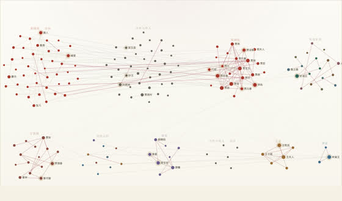
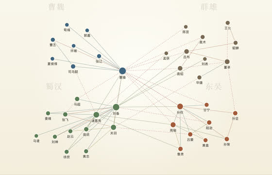
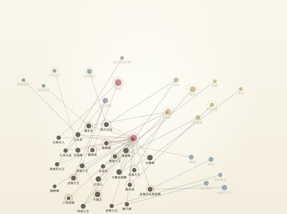
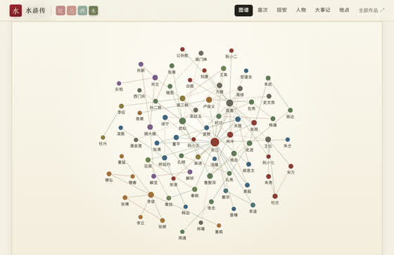
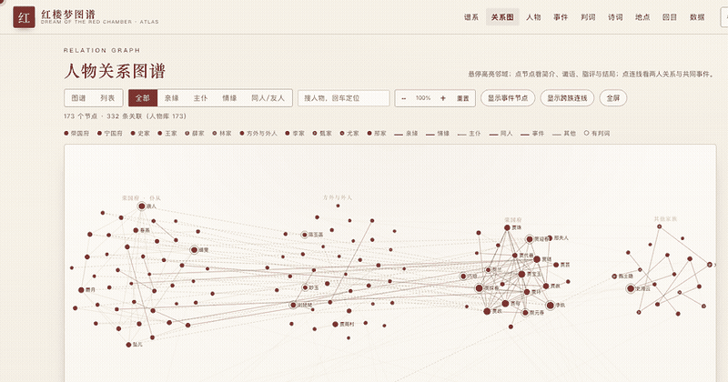

China's four great novels as interactive graphs — the people, the relations, the journeys and the endings, each one cited back to its chapter.

Genealogy, relationship graph, fates and poems — the most complete atlas in the series.
173 characters · 860 relations
From the Peach Garden Oath to Wuzhang Plains, with novel-vs-history notes on every entry.
39 characters · 71 relations · preview slice
Master-and-disciple lineages, the westward route, and the 81 trials mapped to the chapters.
108 characters · 203 relations
The Liangshan ranks and star names, the amnesty campaign, and how each hero ends.
79 characters · 110 relations
Every node carries birth order (eldest son, second daughter…), title and office, and branch (长房/二房/旁支). Inheritors get a crown mark; legitimate and concubine-born children are visually distinguished; siblings are ordered by age.
Two people can be siblings and poetry-club members. Only one line is drawn — the highest-weight relation (kinship > marriage > service > club > event) — and the rest are listed in the relation card.
All 360 entries carry references (820+ source items). Disputed endings are marked 「一说」/「探佚」 rather than stated as fact — this is scholarship-minded data, not fan fiction.
Generation-by-generation trees for the Jia (Ning & Rong), Shi, Wang, Xue and Lin clans. Dashed lines are marriages.
Graph or list view, filtered by kinship / service / romance / friendship. Press F for fullscreen, ESC to exit. Click an edge to see what two people are to each other and which events they share.
Click a person for their bio, fate (判词 with a plain-language gloss), 脂评 marginalia, ending, and related events.
Search by name or by 别号 (alias) — 蕉下客 lands on 探春. Press ⌘K to open search anywhere.
Zero frontend dependencies. Data lives in SQLite, rebuilt from Python's standard library in one command.
python3 tools/build_seed.py # build db/seed.json python3 db/init_db.py --force # build db/honglou.db ./start.sh # http://127.0.0.1:8600